These analyses are based on responses collected from 2184 caregivers between the dates of August 25, 2020 and October 08, 2020. These caregivers represent a range of voices: 8.42% are Black/African American, 16.21% are LatinX, (0.55% report being both Black/African American and LatinX,) and 26.10% live at or below 1.5 times the federal poverty line. Proportions/percentages are calculated based on the item-level response rates, not out of the total sample size. The data for these analyses are not weighted.
This composite was created by treating the 9 “concerns for children” variables as continuous and averageing responses across those items. The resulting index is a measure that ranges from 0 (Never concerned) to 3 (Concerned most of the time).
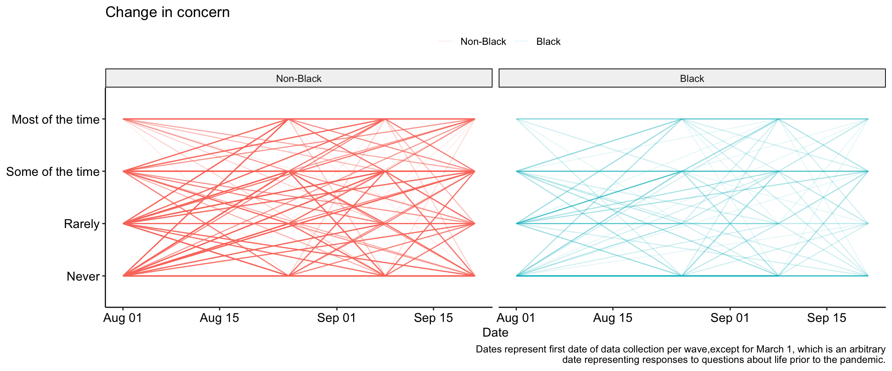
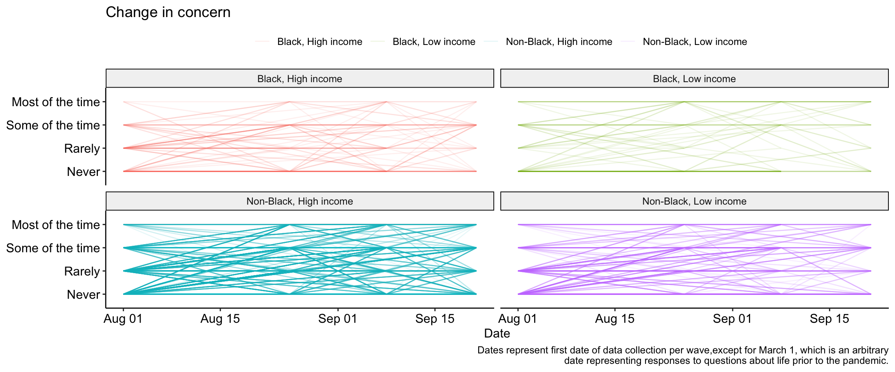
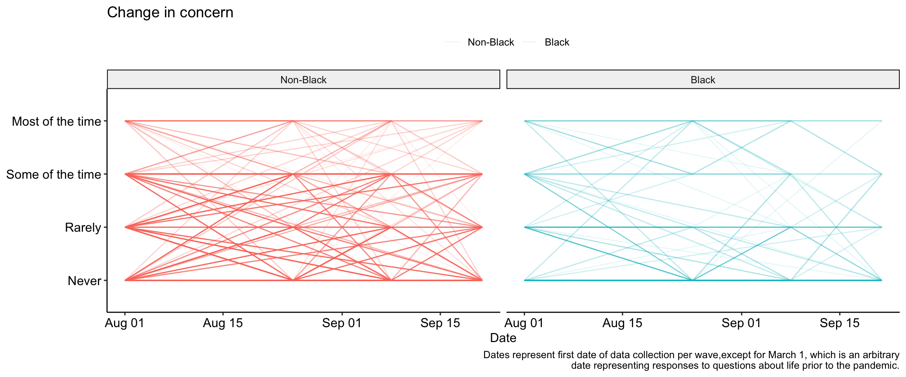
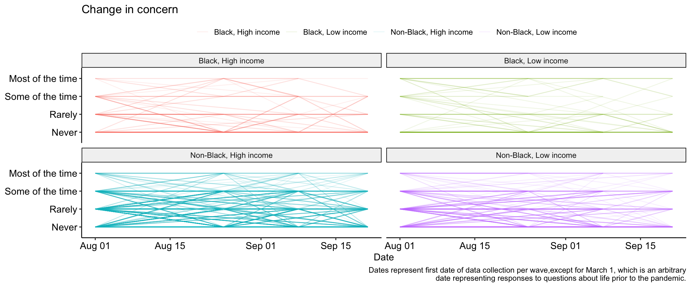
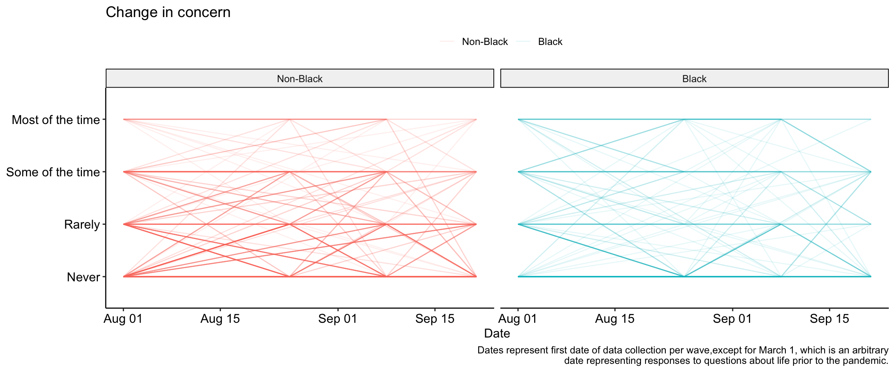
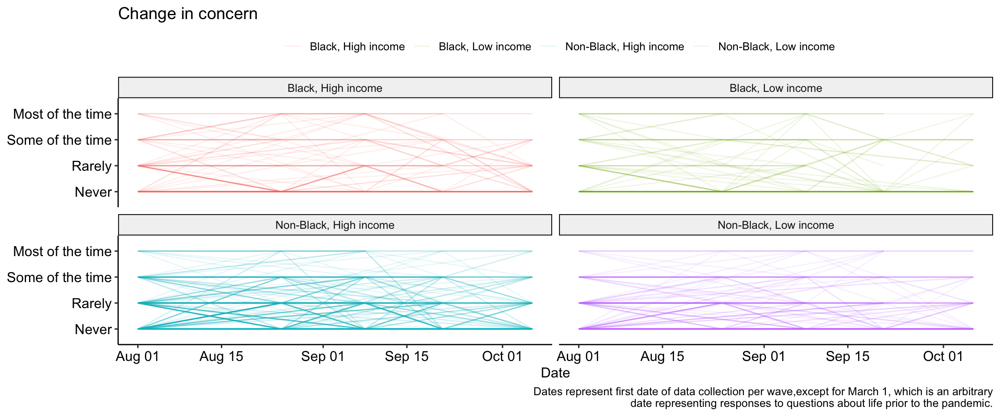
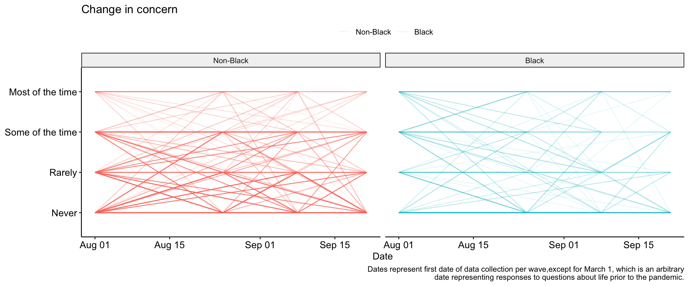
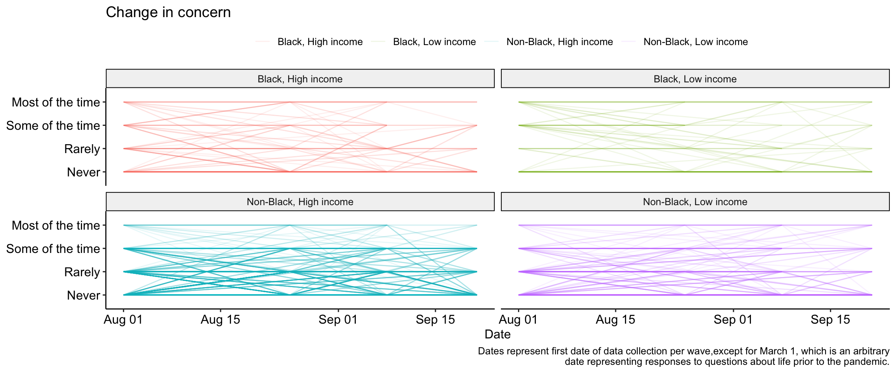
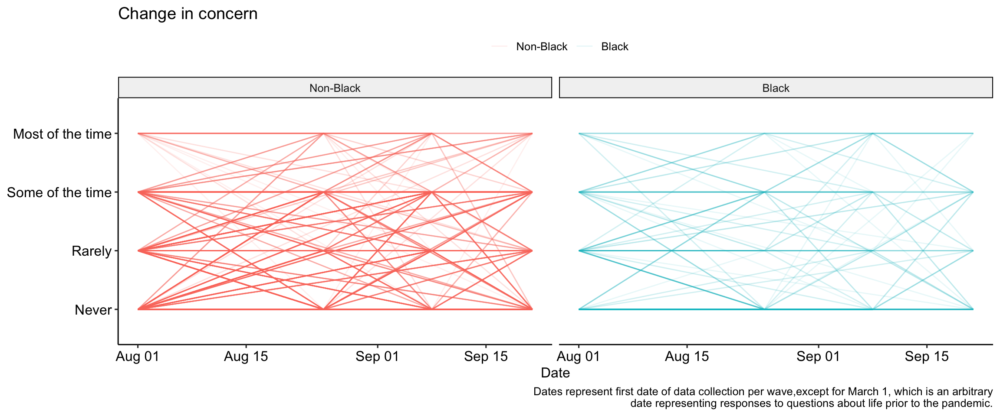
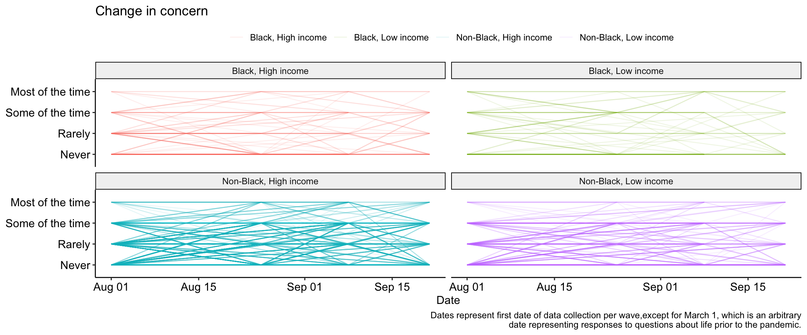
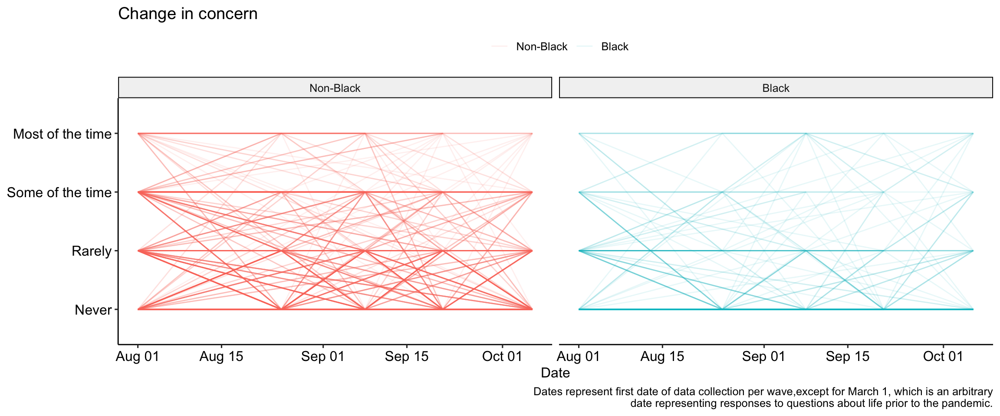
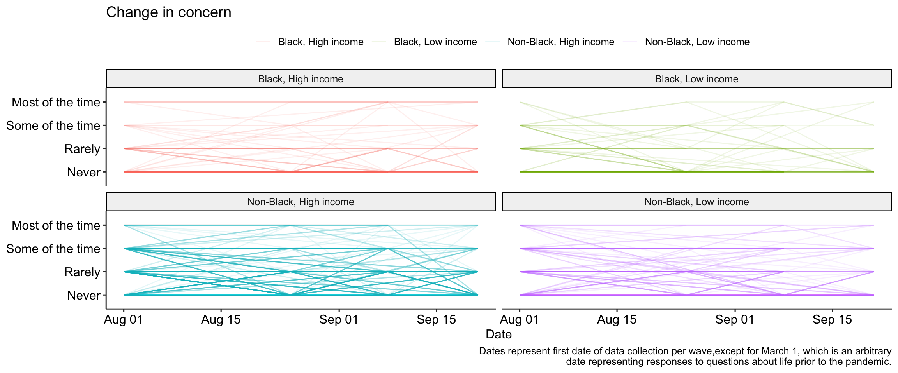
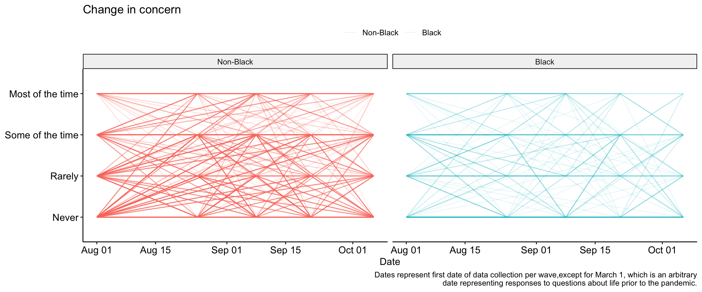
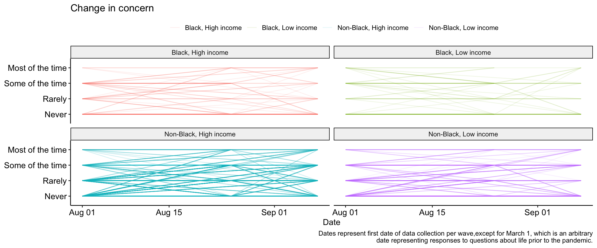
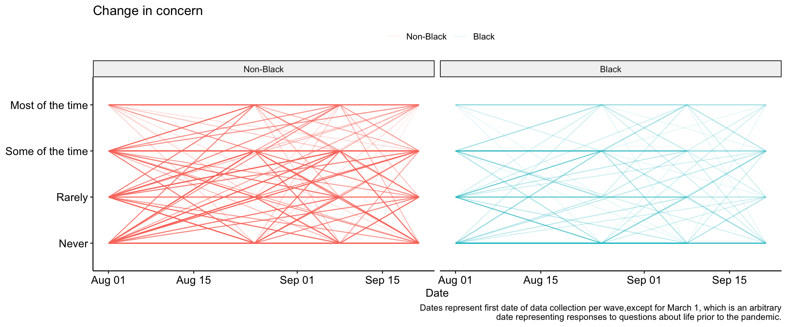
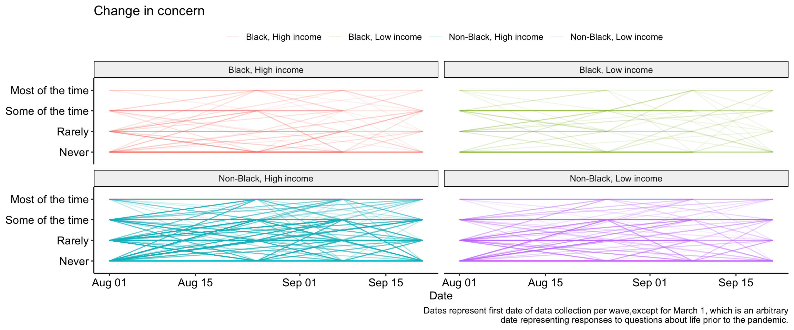
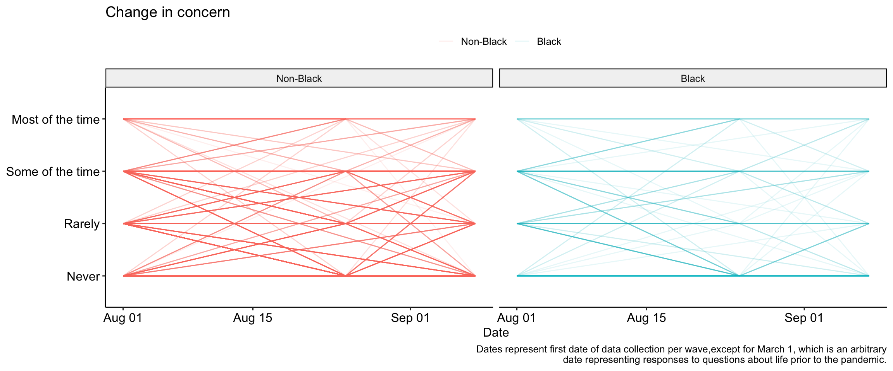
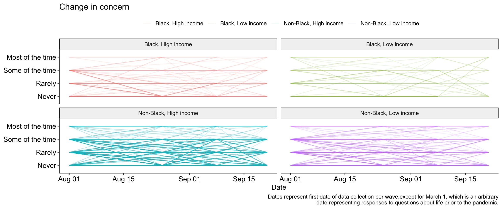
This composite was created by treating the 12 discrimination variables as continuous and averageing responses across those items. The resulting index is a measure that ranges from 0 (Endorsed no discrimination items) to 1 (Endorsed all discrimination items).